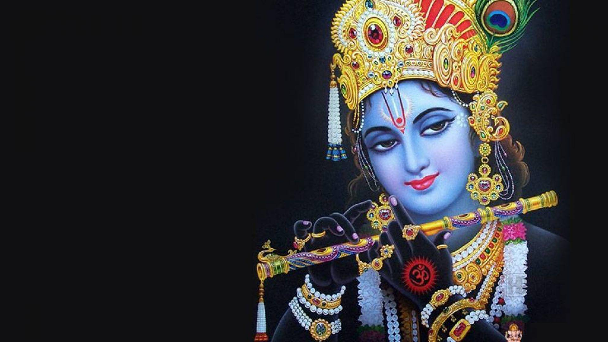

Krishna becomes Arjuna's charioteer for the Kurukshetra War, but on the condition that he personally will not raise any weapon. Upon arrival at the battlefield and seeing that the enemies are his family, his grandfather, and his cousins and loved ones, Arjuna is moved and says his heart will not allow him to fight and kill others. He would rather renounce the kingdom and put down his Gandiva (Arjuna's bow). Krishna then advises him about the nature of life, ethics, and morality when one is face with a war between good and evil, the impermanence of matter, the permanence of the soul and the good, duties and responsibilities, the nature of true peace and bliss and the different types of yoga to reach this state of bliss and inner liberation. This conversation between Krishna and Arjuna is presented as a discourse called the Bhagavad Gita.
It is stated in the Indian texts that the legendary Kurukshetra War led to the death of all the hundred sons of Gandhari. After Duryodhana's death, Krishna visits Gandhari to offer his condolences when Gandhari and Dhritarashtra visited Kurukshetra, as stated in Stree Parva. Feeling that Krishna deliberately did not put an end to the war, in a fit of rage and sorrow, Gandhari said, "Thou were indifferent to the Kurus and the Pandavas whilst they slew each other. Therefore, O Govinda, thou shalt be the slayer of thy own kinsmen!" According to the Mahabharata, a fight breaks out at a festival among the Yadavas, who end up killing each other. Mistaking the sleeping Krishna for a deer, a hunter named Jara shoots an arrow towards Krishna's foot that fatally injures him. Krishna forgives Jara and dies. The pilgrimage (tirtha) site of Bhalka in Gujarat marks the location where Krishna is believed to have died. It is also known as Dehotsarga, states Diana L. Eck, a term that literally means the place where Krishna "gave up his body". The Bhagavata Purana in Book 11, Chapter 31 states that after his death, Krishna returned to his transcendent abode directly because of his yogic concentration. Waiting gods such as Brahma and Indra were unable to trace the path Krishna took to leave his human incarnation and return to his abode.
